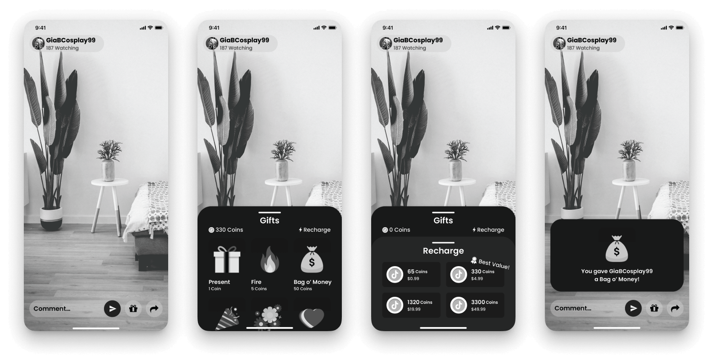

Wireframing & Prototyping
After sketching ideas, I narrowed down which concepts I wanted to incorporate into TikTok's Live Stream
functionality. I landed on the donation feature, where Viewers can donate money to the Content Creator
they're currently watching.
The competitive analysis was used to bring to the surface what made TikTok different than its competitors.
The most popular of the six direct and indirect competitors were Byte Inc. and Instagram.

Compared to the current donation flow, not much has changed as it is as bare-bones as one can make it, in my
opinion. But what can change is how easy it is accessed and how decisions to donate are made. I rounded the
corners of nearly everything to add a sense of friendliness, made buttons bigger to make them seem even more
prominent, and moved the “recharge” button to refill coins in a more prominent area that's closer to the
Thumb Zone. I then used Craft/InVision to prototype it
and set it up for Usability Testing.
Usability Testing
I sent out screener surveys and ended up with five participants, all of whom are Viewers. Three participants
frequently watch TikToks daily, and the other two go on TikTok for roughly 2−4 hours weekly. Three
have
previously donated money to Content Creators, either through TikTok itself or through Venmo, CashApp,
Patreon, etc. Due to limited responses on the survey, all Viewers infrequently watch Live Streams, and not
for very long if they do. Each participant was given a list of tasks to complete. (1) To open the live
stream, (2) Refill the number of coins in their account, (3) Then donate money to their favorite creator,
and (4) Undo the donation if they would like (optional).
My assumptions entering the tests were: People don't trust TikTok enough to donate through their
platform,
and if people perceive TikTok to be less aggressive, they'll be more likely to donate.
For the Open Live Stream screen, most people opened the Live Stream before I was able to ask or mention
anything, which made me believe that it was intuitive, at least on some level. The Recharge Drawer screen
had several points for feedback. One participant mentioned to “change the phrase [“Recharge”]. It
reminds me
too much of video games and how I need to recharge my health or stamina.” It is currently the copy
that
TikTok uses, and this participant was the only one who commented on this, so I didn't change it.
Another participant said, “I like the height of the [drawers], but I wish they were a little bit lower
down so I can see more of the live stream.” A second participant stated a similar suggestion. This
viewer also suggested that I at least add a photo of what a Live Stream would look like as opposed to a
blank room for reference for how high the drawers should go. I ended up lowering the drawers so that more of
the Stream is visible to the Viewer.
For the Gift Drawer screen, one participant recommended reordering the illustrations. The recommendation was
that the illustrations should be organized based on how elaborate the animations would be when played
on-screen when the Viewer selected them. I reorganized the illustrations based on exactly that. Another
stated that they didn’t know what gifts did, and suggested adding a help button to bring up a page to
explain it all. Because of that I added a help button, as well as changed the lightning symbol for
“Recharge” to the local currency so it would be less confusing.